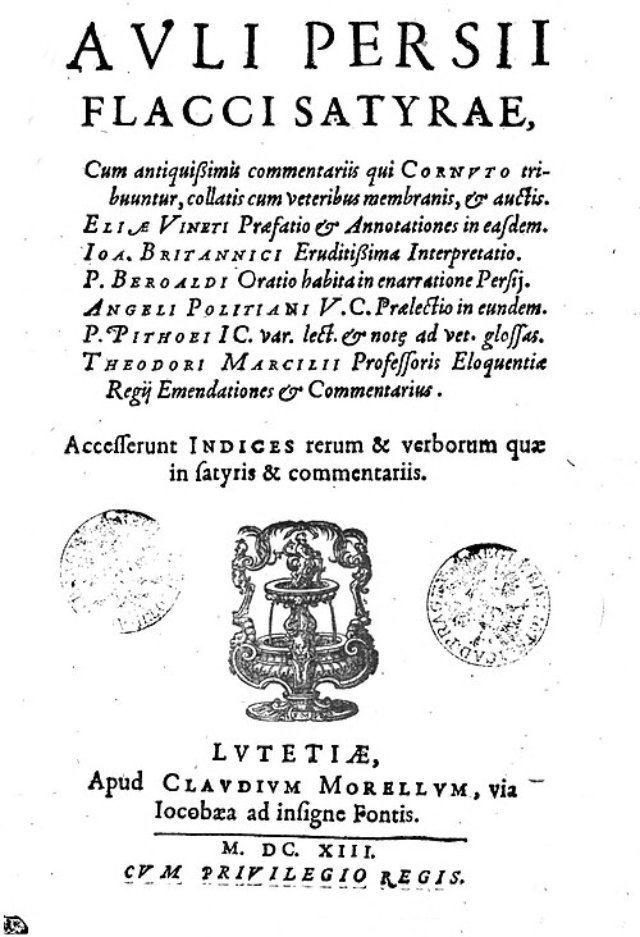

Poesia del giorno · 24 novembre

.jpg){kind=link}
Aulo Persio Flacco
Persio era di famiglia equestre, probabilmente di origine etrusca. A dodici anni passò a Roma, dove studiò con il filosofo stoico Anneo Cornuto e conobbe Lucano. Morì a ventotto anni lasciando un solo libro, sei satire, che Cornuto e Cesio Basso rividero e pubblicarono dopo la sua morte.
Il prologo sono quattordici coliambi, il verso «zoppo» della poesia aggressiva. Persio dice di non aver bevuto alla fonte delle Muse né dormito sul Parnaso: è un semipaganus, mezzo villano, che porta il suo canto alla festa dei poeti. Poi la stoccata: a far parlare pappagalli e gazze è la fame, e quando luccica il denaro anche i corvi si credono poeti.
Nec fonte labra prolui caballino
Nec fonte labra prolui caballino nec in bicipiti somniasse Parnaso memini, ut repente sic poeta prodirem. Heliconidasque pallidamque Pirenen illis remitto quorum imagines lambunt hederae sequaces; ipse semipaganus ad sacra vatum carmen adfero nostrum. quis expedivit psittaco suum ‘chaere’ picamque docuit nostra verba conari? magister artis ingenique largitor venter, negatas artifex sequi voces. quod si dolosi spes refulserit nummi, corvos poetas et poetridas picas cantare credas Pegaseium nectar.
Non mi sono bagnato le labbra alla fonte del cavallo né ricordo di aver sognato sul Parnaso dalle due cime per uscirmene così, di colpo, poeta. Le Eliconie e la pallida Pirene le lascio a quelli i cui busti sono lambiti dall’edera rampicante; io, mezzo villano, porto il mio canto alle feste sacre dei vati. Chi ha insegnato al pappagallo il suo «salve» e alla gazza a provare le nostre parole? Maestro d’arte e dispensatore d’ingegno è il ventre, bravo a imitare le voci negate. E se balena la speranza del denaro ingannatore, corvi poeti e gazze poetesse li crederesti cantare il nettare di Pegaso.
Prologo delle Satire · testo dell’edizione di Franz Bücheler, con v al posto di u consonantica · da Wikisource